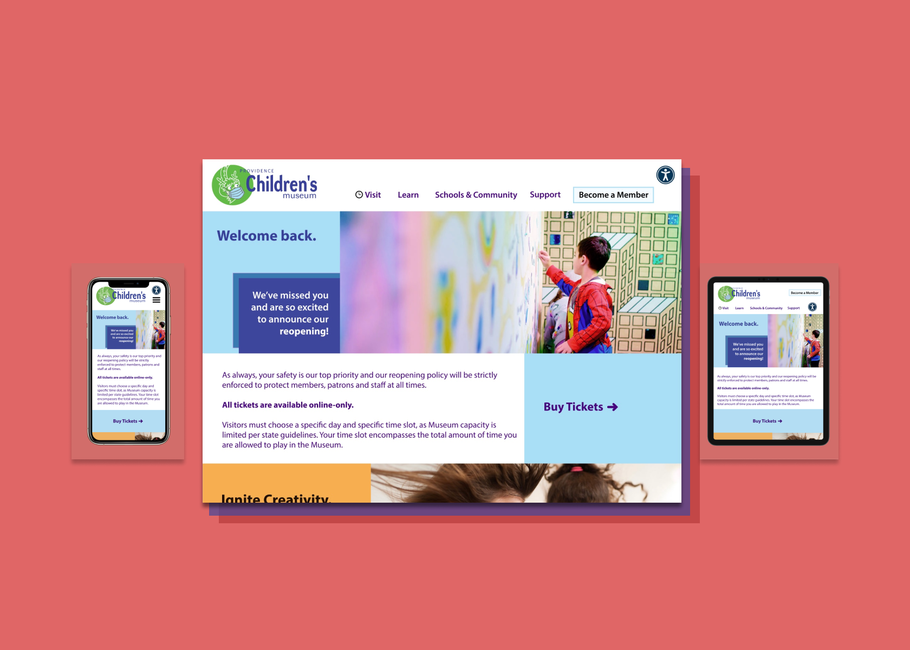

hi! I'm annie,
an interdisciplinary
At the intersection of biology, design, & technology, I'm passionate about bridging worlds, facillitating empathetic connection, and solving meaningful problems through human-centered design.
✧ S C R O L L T O V I E W M Y P O R T F O L I O ✧
︾

nasa internship
↳ how can we design for space
through the lens of biology?

responsive redesign
↳ redesigning a website interface w/ accessibility & inclusivity as a core value--not a side option.